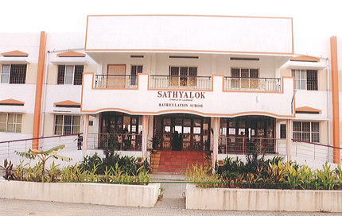

Objectives of the Trust
- Helping multi challenged children to come up with rehabilitation and live as common citizens
- Providing accommodation and boarding facilities for senior citizens - Home - away - from Home with ultra modern facilities
- Facilities with Medical care, Medical Therapy and services for the inmates
- Providing vocation Training in Tailoring, carpentry, arts & crafts, music, Computer, Electrical to the multi challenged children to make them feel life as boon
- Giving rehabilitation facilities for multi challenged children and senior citizens for making them to feel "Life is a Boon"